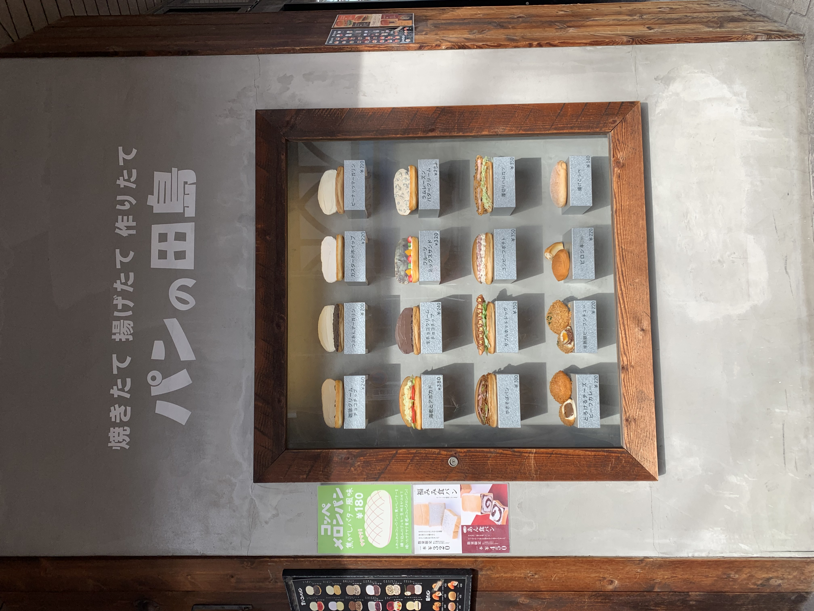
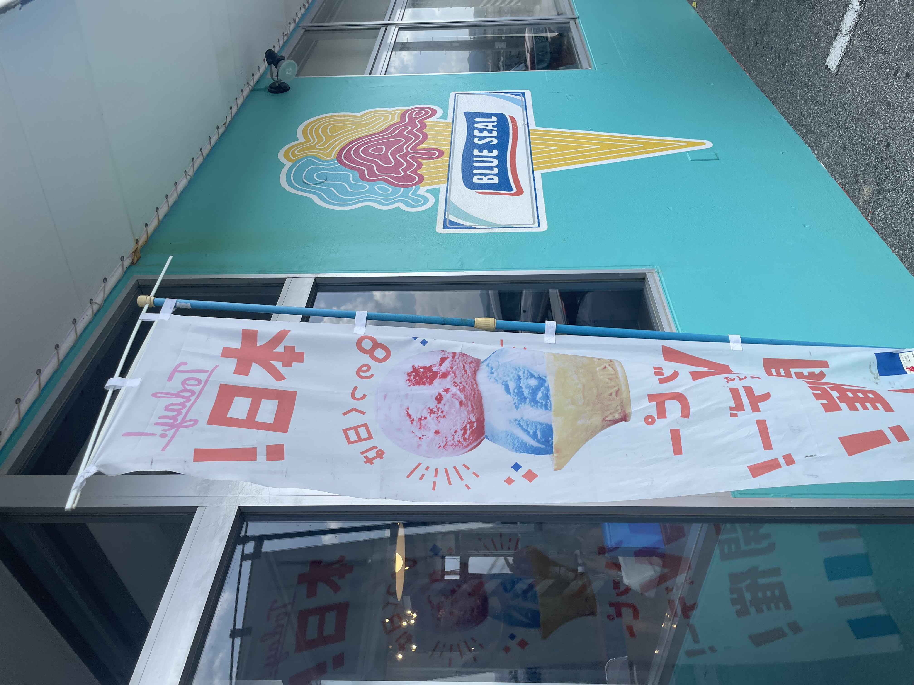
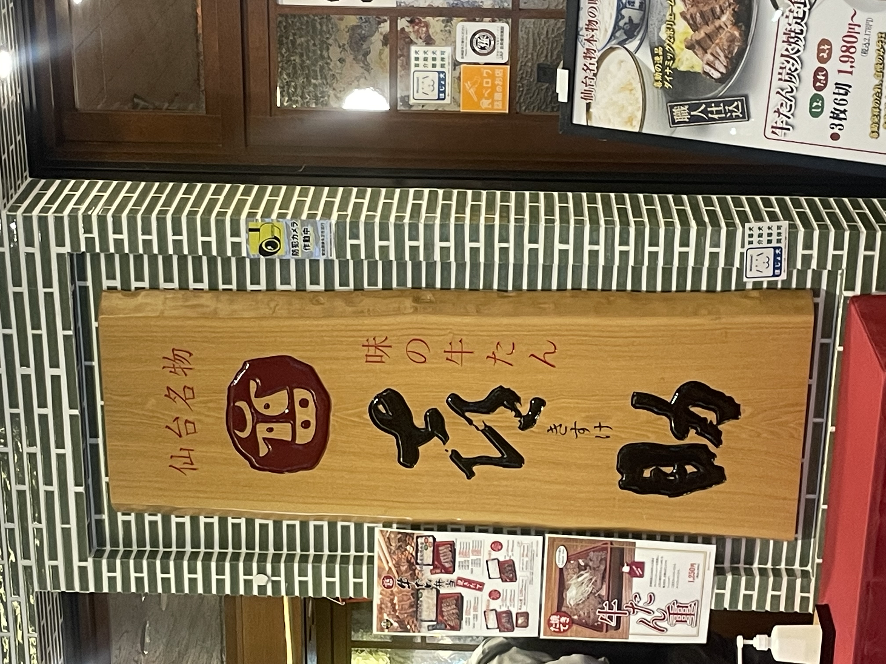

パンの田島 （神奈川県横浜市港北区綱島東１−１−１８）

撮影日:2022年10月30日
撮影者：自分
とても人目を引く看板。ここの一押しであろう様々なパンが並んでいる。
見ているだけでお腹が空いてくるような看板となっている。
BLUE SEAL （沖縄県名護市東江５−２２ー２０）

撮影日:2023年8月28日
撮影者：自分
BLUE SEALらしさが際立つエメラルドグリーンの壁紙。
アイスクリームのデザインも個性的で映えそうなサインとなっている。
喜助 （神奈川県横浜市西区みなとみらい２−２−11階）

撮影日:2023年10月6日
撮影者：自分
仙台といえば牛タン。そのイメージ通り看板には牛のマークが。
看板自体を木材にすることでお店の文字がより味を出し、雰囲気が出ている。